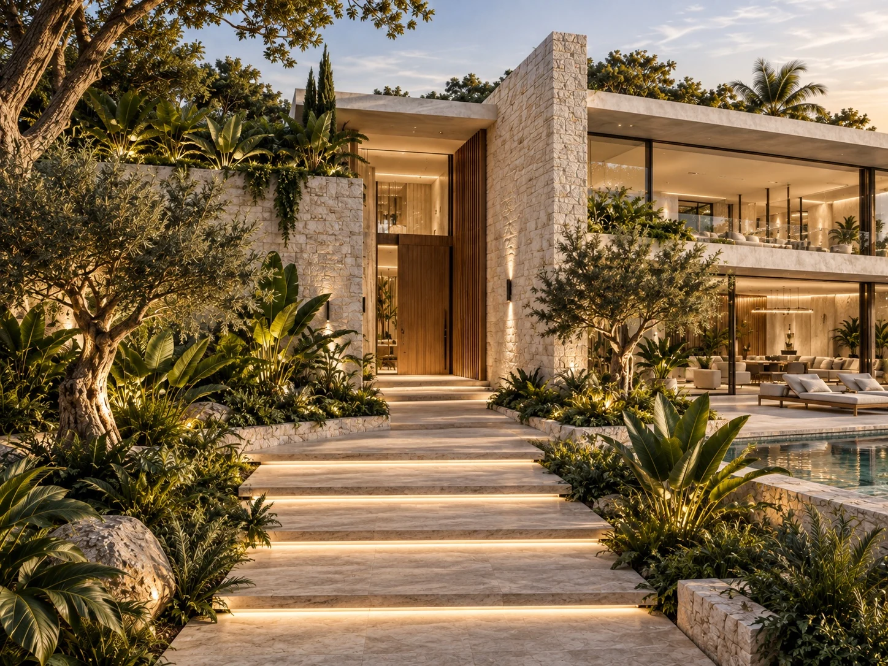
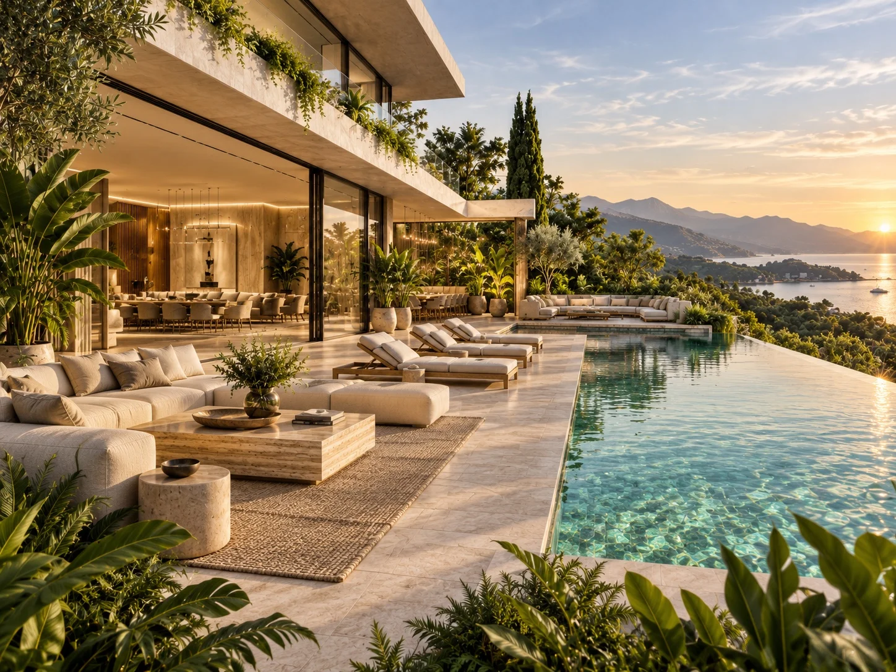
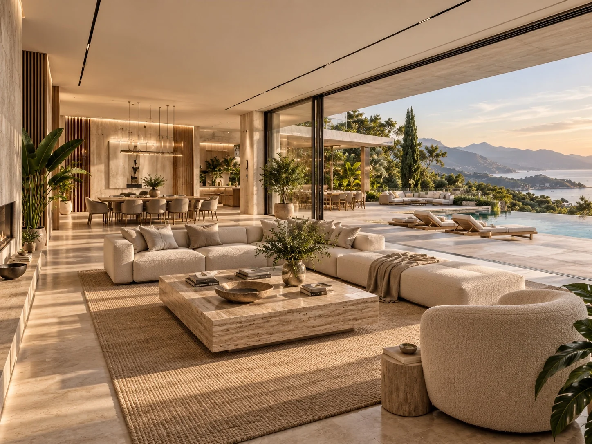
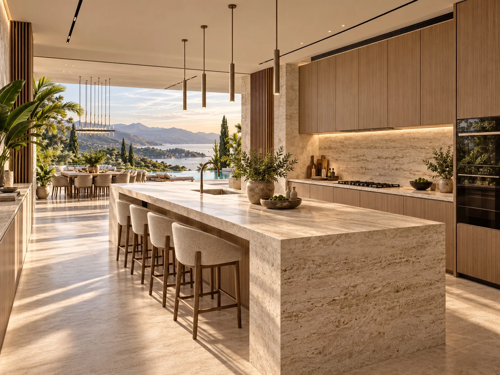
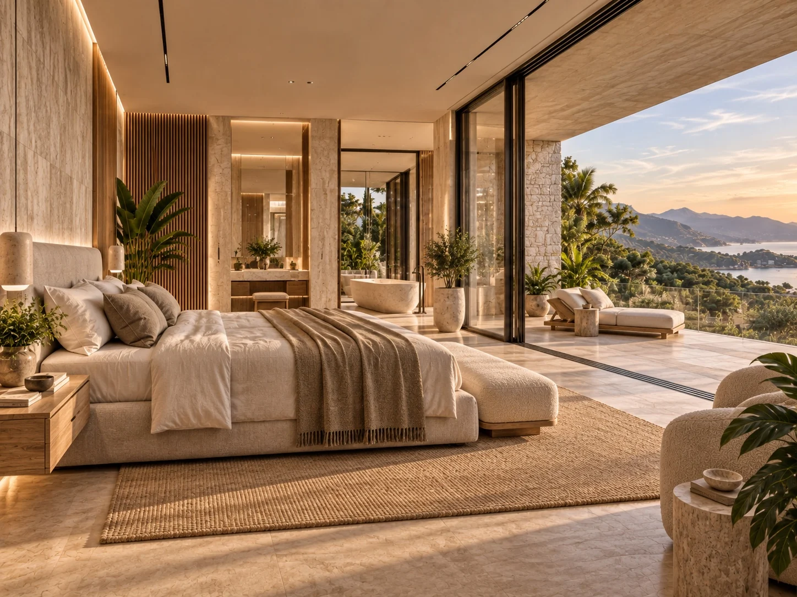
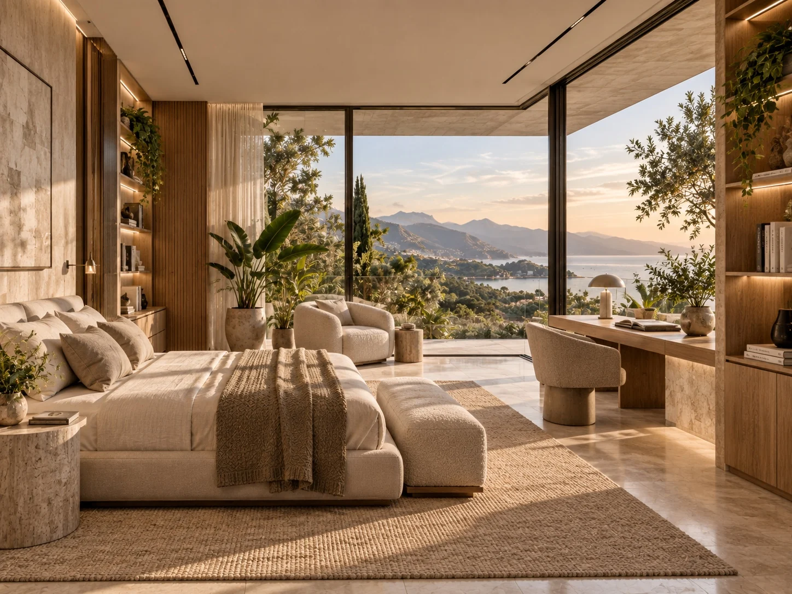
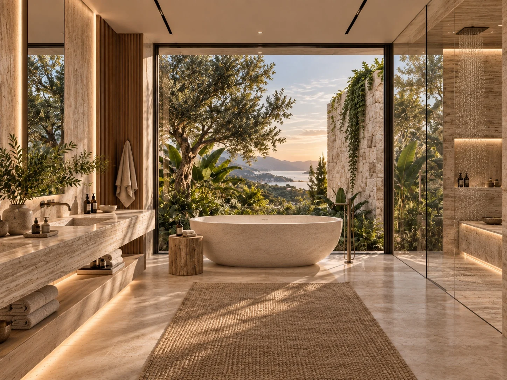

Nature-inspired villa concept
Coastal Garden Villa
Quiet interiors. Open horizons. A home within the garden.

Coastal Garden Villa explores a spacious home shaped around light, planting and views of the sea. Layered stone volumes, warm timber and broad glazed openings connect the interiors with a garden and pool terrace. The concept carries a restrained material palette through the living room, kitchen, bedrooms and bathroom. Generous shared spaces open towards the horizon, while quieter rooms use framed views and soft textures to create a more intimate atmosphere.
Material direction
Light travertine-like stone; textured natural-stone walls; warm timber cabinetry and wall panels; clear glass with dark slim frames; linen and textured neutral upholstery; woven rugs; layered planting and water. Final finishes and construction details would be developed during technical design.
My role
Concept design, creative direction and visual storytelling — Maria Andriiuk.
Concept & atmosphere
A garden residence combining clean architectural lines with tactile natural materials. The concept creates a calm setting for everyday life, using open views and planted edges to connect rooms with their surroundings.
Signature elements
Layered horizontal roof planes; tall stone entrance walls; planted balcony edges; an infinity pool; full-height glazing; a stone kitchen island; terrace-facing bedrooms; a freestanding stone bath.
Lighting direction
Daylight and warm coastal sunlight define the interiors. Concealed lighting beneath steps, cabinetry and shelving reveals texture after sunset. Slim ceiling tracks and pendant lights provide a restrained visual language through the shared rooms.
Experience & journey
The arrival route passes through the garden towards a sheltered timber entrance. Living and dining spaces open to the pool terrace, while the bedrooms and bathroom frame more private views of trees and the coastline.
Scope of work
Overall concept and narrative; exterior and interior atmosphere; material and colour direction; lighting mood; arrival and living sequence; room concepts; visual storytelling and presentation.

Arrival through stone & plantingOpen full size ↗
Pool terrace at sunsetOpen full size ↗
Living room open to the landscapeOpen full size ↗
Kitchen & dining directionOpen full size ↗
Bedroom opening onto the terraceOpen full size ↗
Bedroom with a quiet study cornerOpen full size ↗
Bathing beside the gardenOpen full size ↗